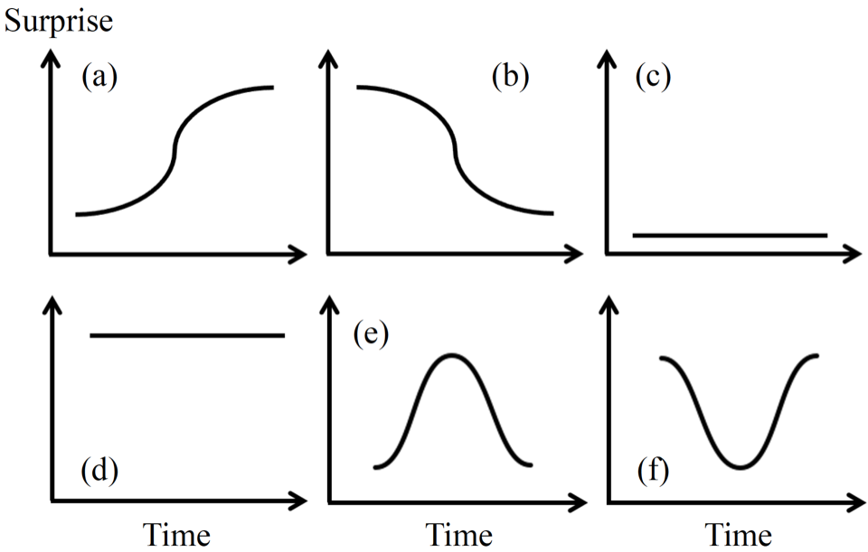

Ground truth
The human-arranged chord progression.
Loads when you press play.
Precomputed listening demo
Compare precomputed SurpriseNet outputs across six user-controlled contours and three melody excerpts.
SurpriseNet conditions a variational autoencoder with a contour derived from chord-transition probabilities.
Pick an excerpt and contour, then compare the source progression with two model variants. Everything here is served as static media; this page does not run model inference.
The selection stays shareable in the page URL.
The graph controls how chord surprise changes over time.
The human-arranged chord progression.
Loads when you press play.
Generated with the selected contour.
Loads when you press play.
Generated with additional surprise weighting.
Loads when you press play.

The contour represents harmonic unexpectedness over time. It guides chord selection without changing the input melody.
The model, training code, evaluation utilities, and this explorer now live in one repository history.
“SurpriseNet: Melody Harmonization Conditioning on User-controlled Surprise Contours”
Yi-Wei Chen, Hung-Shin Lee, Yen-Hsing Chen, and Hsin-Min Wang. ISMIR 2021.